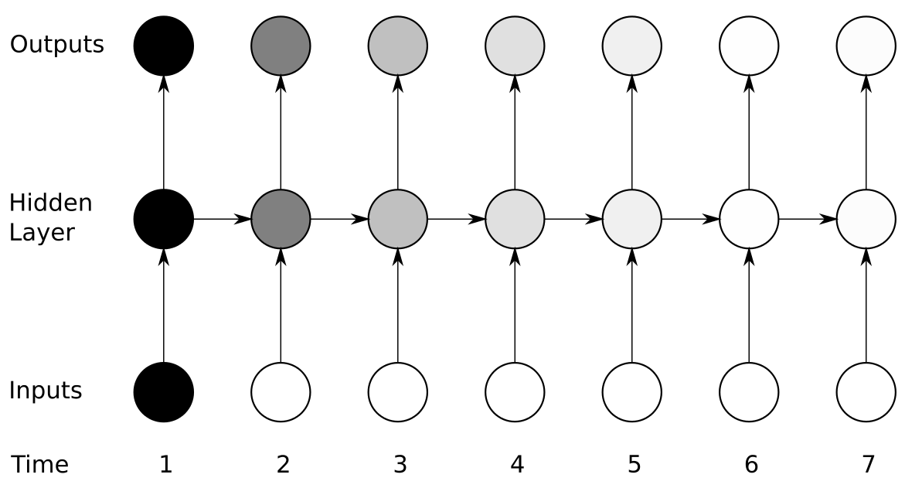
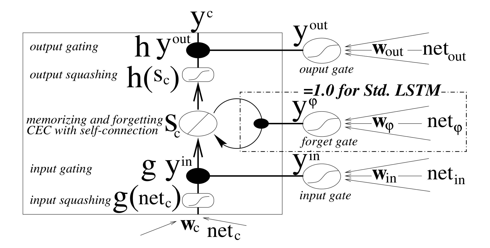
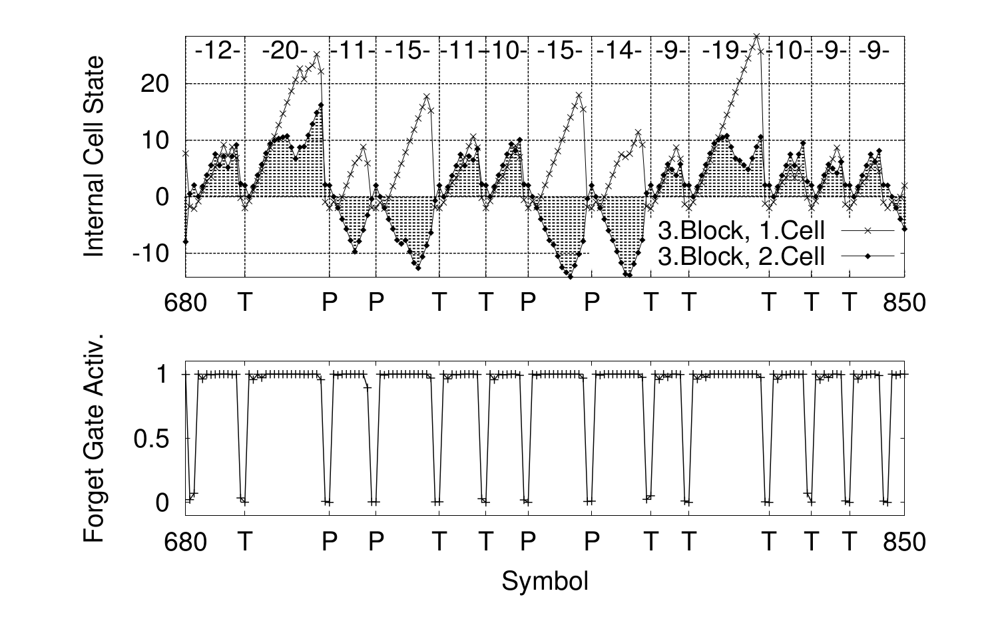

Reading Group #2
Sequence to sequence
learning
with Neural Networks
By Hugo Mougard
On June, 1
Overview
- Paper Metadata
- Task
- Previous Methods
- Method
- Experiments
- Long Short-Term Memory
- Bibliography
- Conclusion
Paper Metadata
Google DeepMind strikes again
- Title
- Sequence to Sequence Learning with Neural Networks
- Authors
- Ilya Sutskever, Oriol Vinyals and Quoc V. Le
- Conference
- NIPS'2014 (2014/12)
- Citations six months after publication
- 77
Overview
- Paper Metadata
- Task
- Previous Methods
- Method
- Experiments
- Long Short-Term Memory
- Bibliography
- Conclusion

http://csunplugged.org/the-turing-test/
Task
Domain
Machine Translation
- One of the hardest Natural Language Processing Tasks
- Extremely active research domain
- Huge industry backup
Task
Dataset
Subset of the WMT'2014 English to French Machine Translation track dataset
- WMT = Workshop on Machine Translation
- Training set: 12M pairs of sentences (348M French words and 304M English words)
- Test set: not detailed in the paper
- Availability of baseline results for this particular training and test set
Task
Evaluation Metric
BLEU
- Most used metric for Machine Translation
- Uses comparisons with human translations through n-gram matching
- The higher the better
Overview
- Paper Metadata
- Task
- Previous Methods
- Method
- Experiments
- Long Short-Term Memory
- Bibliography
- Conclusion
Previous Methods
Machine Translation
Example with Phrase-based Machine Translation
A typical pipeline has many steps
- Pre-processing
- World alignment
- Lexical translation
- Phrase extraction
- Phrase scoring
- Phrase reordering
- Decoding
Mostly trained/tuned independently
Overview
- Paper Metadata
- Task
- Previous Methods
- Method
- Experiments
- Long Short-Term Memory
- Bibliography
- Conclusion
Method
Goal
Apply Neural Language Models to Machine
Translation:
→ one simple
model instead of many in
previous work
Method
Roadblocks
-
Varying lengths of inputs
and outputs (sequence to
sequence learning)
→ which network topology to use? -
Huge training dataset
→ how to speed up learning?

http://www.walthampton.com/success/road-blocks-hula-hoops/
Method
Network topologies
Our lego bricks
Fixed input size, fixed output size → usual feed forward networks work:

Method
Network topologies
Our lego bricks
Varying input size, output size = input size:

Problems:
- “Not” translated before seeing the whole sentence.
- Hard to decode if accounting for different lengths
Method
Network topologies
Key idea to model varying input and output
lengths:
use the encoder-decoder pattern: 2
networks
Method
Network topologies
Fixed input size, varying output size → Combination of feed forward and recurrent networks (2014):

Vinyals, Oriol, et al. "Show and tell: A neural image caption generator." 2014.

Method
Network topologies
Varying input size, varying output size → Combination of two recurrent networks (this paper):

Method
Network details
- 4 layers (deep LSTM)
- 1000 cells / layer
- 1000 dimensional word embeddings
- vocabulary of 160 000 input words and 80 000 output words

Method
Learning
- initialize parameters randomly in [-0.08, 0.08]
- Stochastic Gradient Descent, α = 0.7
- after 5 epochs, halve α every half epoch
- gradient clipping (more on that later)
- no momentum
- mini-batches of 128 pairs of sentences of roughly the same length
Method
Learning trick

Overview
- Paper Metadata
- Task
- Previous Methods
- Method
- Experiments
- Long Short-Term Memory
- Bibliography
- Conclusion
Experiments
Method
- Directly use the models to generate French from English
- Use the models to rescore a SMT baseline output
Experiments
Results
| Model | Method | Performance |
|---|---|---|
| 1 model normal input | generation | 26.17 |
| 1 model normal input | rescoring | 35.61 |
| 1 model reversed input | generation | 30.59 |
| 1 model reversed input | rescoring | 35.85 |
| 5 models reversed input | generation | 34.81 |
| 5 models reversed input | rescoring | 36.5 |
Overview
- Paper Metadata
- Task
- Previous Methods
- Method
- Experiments
- Long Short-Term Memory
- Bibliography
- Conclusion
Long Short-Term Memory
The basics: Simple Recurrent Neuron

Klaus Greff, Rupesh Kumar Srivastava, Jan Koutník, Bas R. Steunebrink, Jürgen Schmidhuber. "LSTM: A Search Space Odyssey." Pre-print.
Long Short-Term Memory
SRN problem: vanishing gradients

Alex Graves. "Supervised Sequence Labelling with Recurrent Neural Networks." Vol. 385. Heidelberg: Springer, 2012.
Long Short-Term Memory
Solution: add gates

Alex Graves. "Supervised Sequence Labelling with Recurrent Neural Networks." Vol. 385. Heidelberg: Springer, 2012.
Long Short-Term Memory
Original LSTM

Sepp Hochreiter and Jürgen Schmidhuber. "Long short-term memory." Neural computation 9.8 (1997): 1735-1780.
Long Short-Term Memory
LSTM problem 1
The internal state tends to become saturated → Need a way to reset it.
Sepp Hochreiter and Jürgen Schmidhuber. "Long short-term memory." Neural computation 9.8 (1997): 1735-1780.
Long Short-Term Memory
LSTM problem 1
A LSTM with satured memory is just a standard RNN cell (it can't remember anything).
Long Short-Term Memory
LSTM problem 1
Solution: add a forget gate
Gers, Felix A., Jürgen Schmidhuber, and Fred Cummins. "Learning to forget: Continual prediction with LSTM." Neural computation 12.10 (2000): 2451-2471.
→ Now LSTMs can learn when to decrease/flush the state
Long Short-Term Memory
LSTM problem 1

Gers, Felix A., Jürgen Schmidhuber, and Fred Cummins. "Learning to forget: Continual prediction with LSTM." Neural computation 12.10 (2000): 2451-2471.
Long Short-Term Memory
LSTM problem 1
When does it matter?
No end-of-sequence markers
Long Short-Term Memory
LSTM problem 2
Gates make decision with no knowledge of the state.
Sepp Hochreiter and Jürgen Schmidhuber. "Long short-term memory." Neural computation 9.8 (1997): 1735-1780.
Long Short-Term Memory
LSTM problem 2
Solution: add connections from the state to the gates.
Long Short-Term Memory
LSTM overview

Klaus Greff, Rupesh Kumar Srivastava, Jan Koutník, Bas R. Steunebrink, Jürgen Schmidhuber. "LSTM: A Search Space Odyssey." Pre-print.
Overview
- Paper Metadata
- Task
- Previous Methods
- Method
- Experiments
- Long Short-Term Memory
- Bibliography
- Conclusion
Bibliography
The paper
Bibliography
LSTM model
| Original paper | Long Short-Term Memory |
| Forget gate | Learning to Forget: Continual Prediction with LSTM |
| Peephole connections | Learning Precise Timing with LSTM Recurrent Networks |
| Survey of many LSTM variants | LSTM: A Search Space Odyssey |
Bibliography
LSTM applications
| Image Captioning | Show and Tell: A Neural Image Caption Generator |
| Machine Translation | Neural Machine Translation by Jointly Learning to Align and Translate |
| Keywords Detection | Deep Sentence Embedding Using the Long Short Term Memory Network |
| Speech Recognition | Towards End-to-End Speech Recognition with Recurrent Neural Networks |
| Handwriting Generation | Generating Sequences With Recurrent Neural Networks |
| Sentiment Analysis | Improved Semantic Representations From Tree-Structured Long Short-Term Memory Networks |
Bibliography
Misc. Recurrent networks stuff
| Neural Networks Overview | Supervised Sequence Labelling with Recurrent Neural Networks |
| Regularization | Recurrent Neural Network Regularization |
| Recurrent Networks Training | On the difficulty of training Recurrent Neural Networks |
| CNN alternative | ReNet: A Recurrent Neural Network Based Alternative to Convolutional Networks |
| Great LSTM blog post + code | The Unreasonable Effectiveness of Recurrent Neural Networks |
Overview
- Paper Metadata
- Task
- Previous Methods
- Method
- Experiments
- Long Short-Term Memory
- Bibliography
- Conclusion
Conclusion
- LSTM achieves state of the art perfs on very hard tasks
- supervised learning might be a solved problem soon